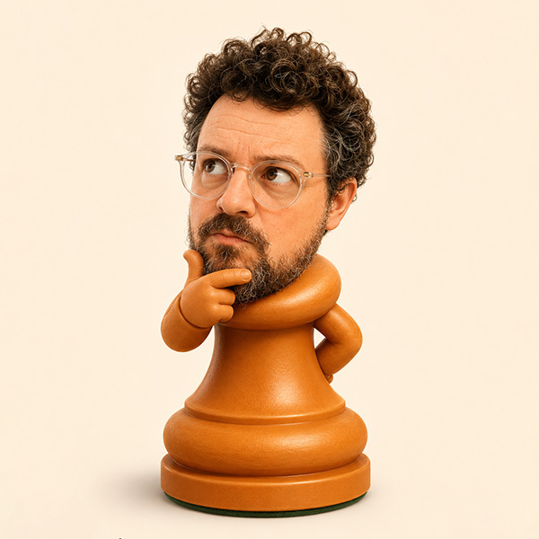

Puzzles that fit you
Rated tactics matched to your level, with puzzles that can also connect to the openings you actually play.
Your personal chess training lab
Build your lines, train the moves you forget, and prepare for the games you’ll actually play.
No signup required.
Line 1 · Italian Game
That’s the Italian Game. Three moves you now own — Bito remembers the other forty for you.
Try it for free →Your move. Follow the arrow: play e4.
1.
Create lines on the board. Pull inspiration from the opening library, curated starter packs, engine suggestions, or your own past games.
2.
Play the line through once. That confirms what you want to learn and puts it into training mode.
3.
Bito keeps track of the moves you get right and the ones you forget. The moves that need work come back more often. The ones you know stay out of the way.
Build exactly what you want to play.
01
Enter moves directly on the board and shape your own lines.
02
Browse thousands of named openings, starter packs or famous traps.
03
Import games from Chess.com or Lichess and turn the positions you actually played into training.
04
Explore alternatives, find better moves and build lines around ideas you discover.
Your training is driven by data, not random drills. Bito tracks your weak points and gives you multiple ways to fix them.
Walk through complete variations until they become muscle memory.
Target the individual positions you have forgotten.
Race against the clock through positions to beat your personal best.
Import your tournament or online games to see what your opponents play, and build lines against their specific weaknesses.
The result is simple:
Less wondering what to study. More time actually studying.
Chess study is much more useful when it starts with your own games.
Import your Chess.com, Lichess or enter your tournament games. Bito can show you where your opening play is working — and where it isn’t. Find the openings you keep struggling with. Discover mistakes that keep coming back. Turn those positions into things you can practise.
Once your repertoire is built, keep sharpening the rest of your game.
Rated tactics matched to your level, with puzzles that can also connect to the openings you actually play.
Bito finds mistakes in your own games and turns them into positions you can play again, this time finding the better move.
You’ve probably played better chess than you realised. Bito brings your great and brilliant moves back so you can recognise those ideas again.
Practise classic endgames and positions from your own games. Play them out against the engine and test yourself against exact tablebase judgement where available.
Play any position against Stockfish 18 lite to test ideas or explore alternatives.
“See how your moves improve.”
Your games and training sessions become a picture of your progress.
Track your training streaks, move memory, puzzle rating, and win rates by opening to see exactly what needs work.
Use Bito Chess without an account — or sign up free to sync your repertoire across devices.
Free
Build and save as many repertoire lines as you want. Explore the opening library. Import games. Solve puzzles. Analyse positions. Train up to 10 lines at a time.
No signup required.
Full Access
9€ one payment
Want to train everything you’ve built? Bito Chess is a solo project — no ads, no investors, no subscriptions. Full Access unlocks unlimited training and helps fund what’s next.
Secure checkout via Lemon Squeezy. A Bito Chess account is required so your purchase can follow you across devices.
I’m a chess player, but not a particularly strong one. 🥹
I tried a lot of opening trainers. They were too rigid, too complicated, or just didn’t match how I wanted to learn.
I wanted something where I could build and store my own repertoire, practise the things I actually forgot, learn from my own games, and prepare for real opponents.
So I built the tool I wanted to use — and I got +200 rating points in the first month!
If it helps other players enjoy studying chess as much as I do, even better.

MarçalBito Chess is a one-person project. There are no investors, no ads, and no business model based on selling your data. An account is strictly optional and is only used to sync your data across devices. Upgrading to Full Access helps keep the project alive.